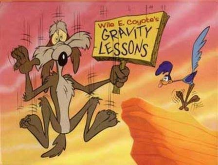
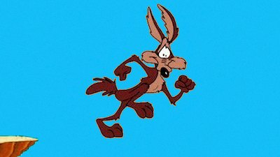
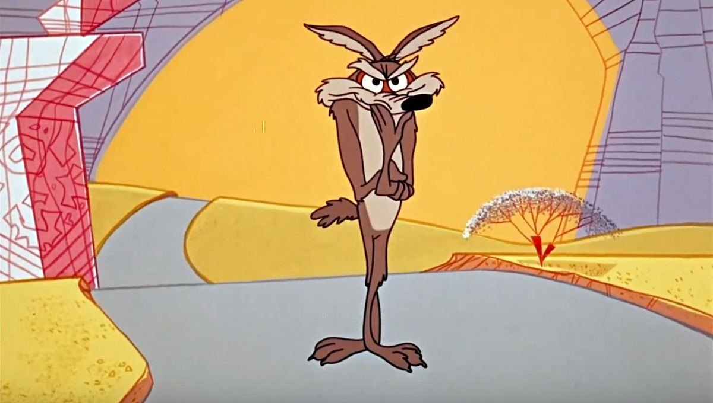
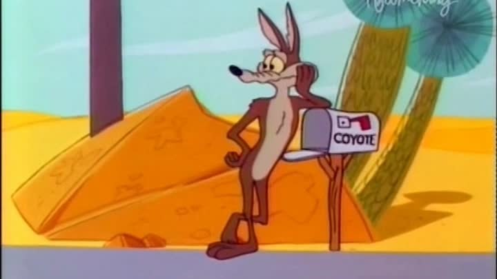

There's a rather curious category of game bugs that are bugs on paper, yet players love them, and the other way round, players call the “normal behavior” a bug and churn out reports about butter-fingered coders. Where the programmer did a good, physically correct job, the player sees an error, an error not in the physics but in how they perceive the game. Picture the most ordinary platformer: the character runs along a platform, approaches the edge and has to jump onto the next one. If you handle the jump “properly” at that spot, in the style of “character is on the ground, jumping allowed; character isn't on the ground, no jumping”: if (IsGrounded() && JumpPressed()) then Jump(), then from the point of view of “correct” physics there's nothing to nitpick, because if there's no platform under its feet anymore, it would be pretty weird to tell the character it's still standing on the ground.
And if the jump button was pressed after the collision system tells us contact with the surface is lost, the jump has to be denied. You could even say this logic behaves in a “physically correct” way, but then a tester shows up and says: “Guys, the jump feels kind of off. I feel like I'm standing on the ground, but there's no jump”.
That “I feel” comes from human experience: our eyes are a little ahead, our heels are a little behind, and all your previous experience says you can still jump. Actually, no, you can't: standing with your heels on the very edge of a platform you won't be able to jump, unless of course you're Drake or Jackie Chan; your brain simply compensates for your position relative to the takeoff point by fibbing to you a little.
Fine, let's leave the testers alone, they're kind people who often feel sorry for the players rather than the developers. We go to our physics programmer and lay the players' complaints on the table, and get a physically correct answer (a wrong one, mind you): “we lack a window of acceptable mismatch between the grounded state and the moment jump input is received”, which, translated into plain human language, means “the platform edge is an edge case that doesn't obey physics”.
Where does the platform end?

Say the character is running right at 5 meters per second, the game runs at 60 FPS, and at some point the following happens:
frame 100 -> character still on the platform
frame 101 -> character still on the platform
frame 102 -> character has left the platform
frame 103 -> player pressed JumpSo for the physics the situation is completely unambiguous: on frame 103 the character is in the air, so IsGrounded() returns false, the condition fails, no jump. For the human in front of the monitor it feels completely different, because they don't see individual frames, they see motion, and they see it not as a sequence of discrete states but as one continuous event. “I ran up to the edge, I'm literally a few pixels away from it, I pressed the button, and from where I'm sitting it all happened practically at the same time”.
But the game has already managed to split that scene into several completely different states, record a few milliseconds of difference between them, and go, so to speak, “too late, the ground's gone from under your feet”.
This brings us to one of the fundamental problems of game development, one that actually has nothing to do with jumps, it's just most visible there. The game measures the world in events, while a human perceives it in states of motion, and what happened for the game on frame 101, 102 or 103 looks to a human like “I see the edge, decided to jump and pressed the button”. These aren't three separate actions, it's one state of motion. The two views diverge, and strict logic starts punishing the player for what is really just the imperfection of their nervous system.
Enter the cartoon coyote

The term “coyote time” itself refers to the old cartoon gag with Wile E. Coyote, who runs off the edge of a cliff and keeps confidently running on thin air for a while, until he looks down and realizes there is, strictly speaking, nothing under his feet anymore. Which is a pretty accurate metaphor for the mechanic: the character has already left the platform and is physically in the air, but for a few more frames the game pretends there's ground under it, and if the player presses jump right after the edge of the platform, the game lets them jump anyway.
if (IsGrounded() || timeSinceLeftGround < coyoteTime)
Jump();The whole mechanic ultimately boils down to a couple of lines and a config value, but we've just deliberately added a bug to the game: the game knows the character is in the air, the game knows the surface has ended, the game knows the player was late. But we've brought back the “correct” behavior the player expects, the player who simply presses a button and sees a jump. Good coyote time shouldn't feel like a separate mechanic at all, it should feel like normal controls.
Who came up with this anyway

The modern name is clearly tied to the cartoon coyote, but pinning down the first person who invented the mechanic itself, or the first to call it coyote time, is practically impossible. Similar kinds of “edge forgiveness” existed in old platformers long before the modern terminology became widespread, and some old games even contained clearly similar mechanics. Examples that come up in discussions include A Boy and His Blob, Donkey Kong Country, Super Mario Bros. 2 and other games from the late 1980s and the 1990s.
Coyote time looks a lot like one of those ideas that pop up across the whole games industry at once, when dozens of developers run into the same problem, each solves it a little differently, and then over time the community finds a catchy name for a technique that already exists. First a small hack appears, then the hack becomes a system, then the system gets a name, and twenty years later developers ask which float they need to set to get the “right” behavior. But of course there is no right float, because players press buttons with different delays, from 80 ms up to 420 ms in the worst case.
Why do we even need coyote time?
Here you need to forget about jumping for a minute, because, as I said, this mechanic isn't about jumps at all, it's about the delay between what the player sees and how they react. A person sees the platform, judges the distance, realizes they need to jump now. Then the nervous system sends a signal to the muscles, the finger starts moving, the button gets pressed, the controller passes the state to the game, and only after all that does our code find out what happened.
Meanwhile the player feels they did everything instantly; for them there's no difference between “I pressed 30 milliseconds before the edge” and “I pressed 30 milliseconds after the edge”, because these events sit at practically the same point in their subjective time. For the game there is a difference, because between the moment some system reported that the action is impossible and the button press, up to 30 frames can pass (in the worst case 420 ms, which is almost 30 frames). That's exactly why games are forced to keep making concessions like this: the problem isn't that the player is bad or slow, it's just that human perception is continuous, while a game ultimately consists of separate, discrete states.
And the faster the game, the more this difference starts to show: at 60 FPS one frame lasts about 16.7 milliseconds, six frames is already roughly 100 milliseconds, which for a human is pretty much the peak of fast reaction.
The flip side of coyote time

OK, we've learned to forgive the player for being late, and now, having run past the edge of the platform and pressed jump a few frames later, they still jump, but a different situation comes up. The character is falling onto a platform and the player wants to do a “bunny hop”, i.e. keep moving with a series of jumps, so they see the character touch the ground and press the button. But the physics hasn't registered the landing yet, and we get:
frame 200 -> character in the air
frame 201 -> character has almost touched the ground
frame 202 -> player pressed Jump
frame 203 -> character landedAnd once again the game is right, on frame 202 you can't jump yet, only now the player once again believes they did everything right. They don't want to jump “now”, they want to jump “as soon as I land”, and if we just throw the input away, we lose the player's intent and knock them out of their state of motion, so we have to make a second mistake, the so-called jump buffer, where the game holds on to the press for a while:
if (JumpPressed())
jumpBuffer = JumpBufferTime;
else
jumpBuffer -= dt;And after landing we check whether the player wanted to jump a little earlier:
if (IsGrounded() && jumpBuffer > 0.0f)
Jump();It makes sense: if Coyote time forgives lateness, then some system has to forgive haste. Which leads us to a more precise description of “good gameplay” than the word “responsiveness”, but here I'd be very careful with the number itself, because, as you understand, people's reaction speeds differ, and if we try to make one magic parameter, or parameters, for both concessions, it'll always be wrong:
Coyote Time:
Mario = 100 ms
Celeste = 100 ms
Hollow Knight = 120 ms
Your Game = ????There are no right numbers for a system like this, and 100 milliseconds may be a perfect value for one person and not enough for another, so two more systems appear that tune these numbers depending on the character's speed, platform size, current acceleration, jump duration, the length of the current animation, and the player's past button-press timings, which leads us to a whole separate character movement system.
How this affects game difficulty
Coyote time makes the game easier, jumping gets a little easier for the player. And for two players who read the level differently, make decisions differently and press the button on different frames, the game removes exactly that difference. This lets the designer build more complex and spectacular levels, adding interesting difficulty.
But it also means modern games without this system now feel broken. When a player has been playing modern games for years, they gradually get used to a certain level of “forgiveness”, and not only in jumping, coyote time leaks into other systems too. Except now the player doesn't even know this level exists, and it's considered the current norm. If they pressed the jump button just before landing, the character should jump. If they've just stepped off the edge, the jump should still work. If they nearly made the corner of a platform, the game should probably help somehow. If they started an action a few milliseconds before the previous one finished, the game should perhaps queue the input. The player doesn't perceive this as help; for them it's now just “normal controls”.
And when they run into a game where none of this exists, you get a situation where the game may be technically, “physically” correct, but the player says “The controls feel kind of janky”. That doesn't necessarily mean old games were bad, it's just that the cultural standard for how a game should interpret human actions has changed. Roughly the same thing happened with game saves: once upon a time it was perfectly normal to lose an hour of progress after dying, while today someone can lose ten minutes and already start suspecting the developers have decided to run a social experiment on them. We gradually get used to a certain level of convenience, and after that, the absence of the familiar convenience is no longer perceived as a missing feature but as “the program misbehaving”.
A good game sometimes has to lie
If a game can understand what the player wanted to do, it should try to do it, and then it becomes clear why the same logic shows up far beyond jumping. In modern games this system already works in attack buffering, extra grace delays for wall jumps, systems that let an action start a little before the previous one finishes, or keeping the player's movement momentum for a few frames after they've stopped.
We admit that between a person's intent and the state of the simulation there's a small temporal and spatial error, and then we deliberately design the system so that this error doesn't turn into punishment. We're used to thinking that good physics follows the given rules as precisely as possible, but the player doesn't need your physics. They need a character that does what they expect it to do.
“Yes, technically you've already fallen off the platform, but I get that you wanted to jump, so let's pretend you haven't fallen yet”: that's a perfectly normal part of game development. You can force the human to adapt to the computer, or you can adapt the game to the human a little.
And if the game manages to adapt, the player won't even notice how many little rules you broke for their sake. They'll just press the button and the character will jump.
All articles